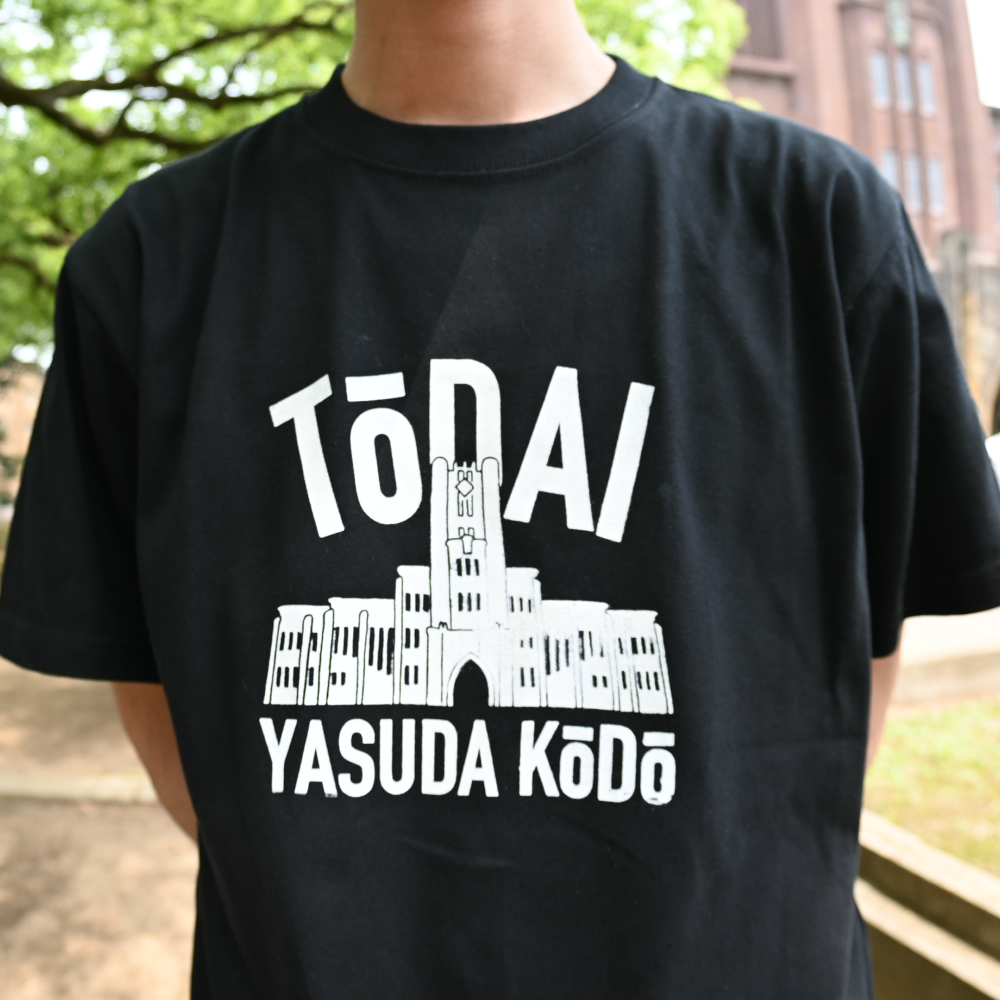
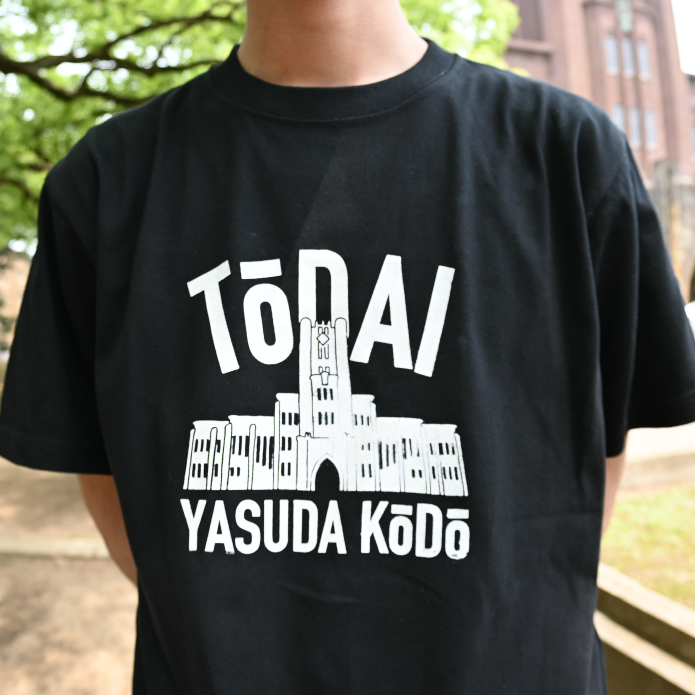
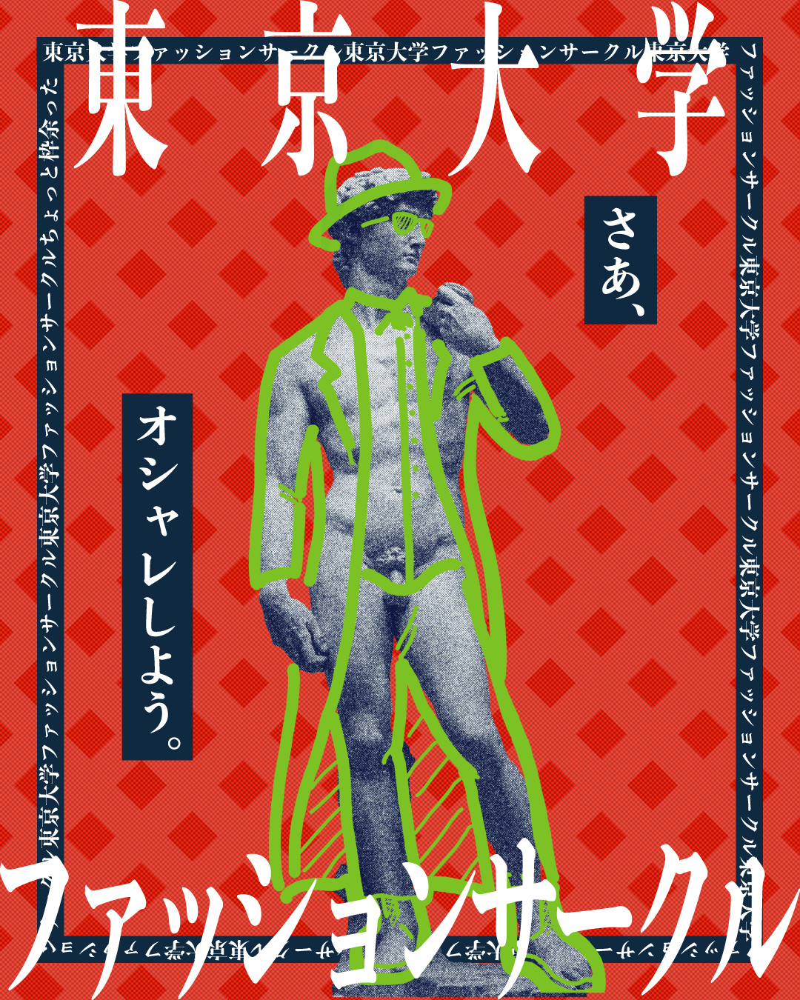
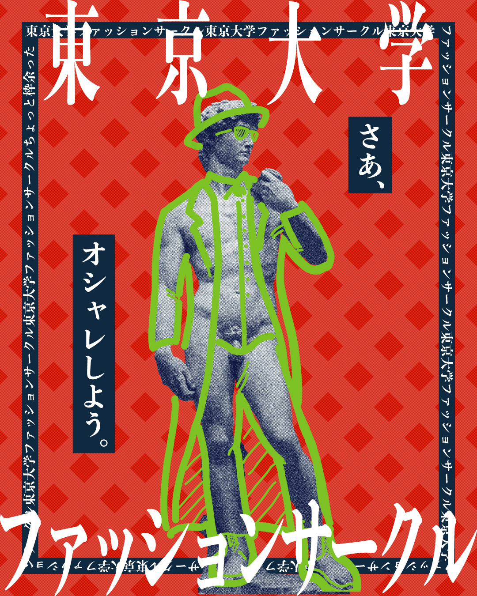

ファッション
大学生になってからファッションを知り、遅咲きの狂い咲きで作る方にも手を出すように。
1枚目は初めて作った服。横から見ると逆S字になる独特な曲線を出すために、石膏で模型をなん度も作った。また、墨で生地を染めたので、賃貸の風呂場が見るも無惨な状況に。
2枚目は、赤をテーマに武蔵美の人たちと服を作り、zine(小冊子)の形式でまとめたもの。五月祭で販売し、嬉しい想定外に50部ほど売れた。
 

Tシャツ
サークルのTシャツを受注生産したり、自分で作ってきたりしている。シルクスクリーンという版画のような技法を使ってTシャツを自作している。
1枚目はNishimoto is the Mouth という有名なTシャツブランドのオマージュ。本家と顔の一致率は脅威の69%。他人の空似と思えない。
 

グラフィックデザイン
色々なサークルの広報などでデザインをするように。かなり楽しい。
1枚目は、人生で初めてのグラフィック。ソフトの使い方もままならなかったが、えっちらおっちら完成にこぎつけた。これで徹夜を知った。

ウェブサイト
1週間でデザインからコーディングまでを行った。HTMLは高校生以来だったが意外となんとかなった。
自分の素材集めが難航し、色々なポーズの写真や動画などを1時間以上にわたってとった。
イラスト
リアルなものから、変なものまで、さまざまなイラストを描くのが好き。子供の頃から落書きばかりしている。
全てのサービスで使っている自画像のアイコンがあるが、これは先にこのイラストがあり、後から自分がそれに似ていった、世にも珍しい逆のパターン。
浪人していた時に自分の顔を模したLINEスタンプも書き多用している。

謎解き
小学生の頃から謎解きに親しみ、最近では謎解き公演の制作に携わるように。主にデザイン、構成、プロデュース、マネジメントなどを担当する。
画像は、いずれもデザインから構成などまで携わったもの。
ファッションサークル
1年生の夏に天啓を受けて設立。以来、精力的に活動したりしなかったりで、メンバーは早稲田、武蔵美などの他大を含め60人を超えるように。フツーに知らない人も多い。
最近は、マナマナやタキヒョーなどの企業などからも声がかかっていて、でっかいファッションショーとかできたらいいな〜と思っている。
一時期はこれの他に漫画と映画のサークルも同時に運営していた。
すごい人が集まって最強の世代みたいなのができたらいいなというのが最近の目標。